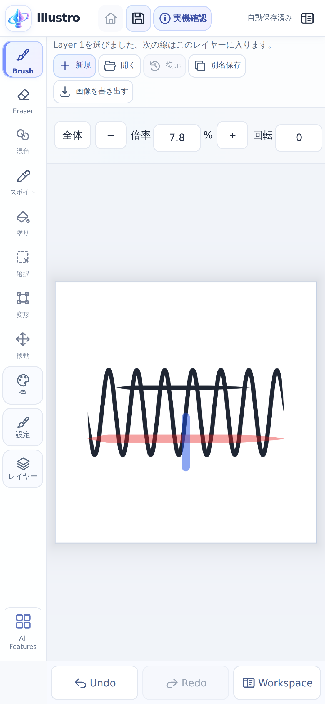
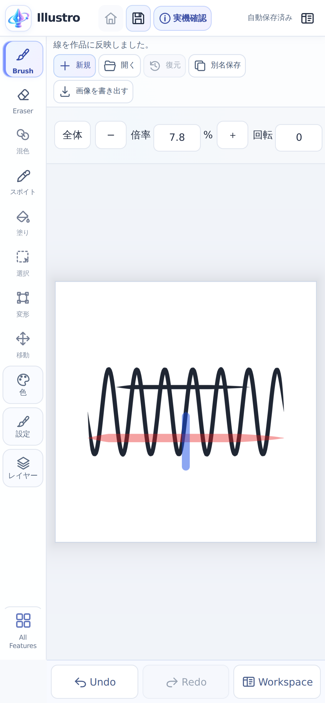
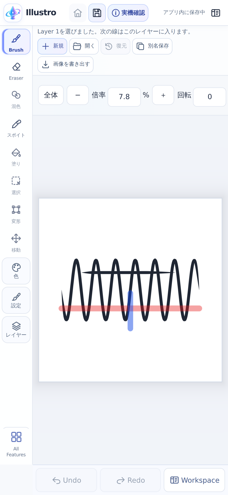

キャンバス操作・入り抜き・下層表示の検証
ソース 8376eb2d359c42e4469fbe3f6f5acde01231e21f。ブラウザの自動検査です。Android実機・実機FPS・ユーザー合格は未確認です。
描画画面に戻る · 性能比較の全結果 · 生データと未確認事項
線の消失は画素の連続検査でも確認しています。画像一枚だけでちらつきの有無を判定していません。
| 方式・画面相当 | 表示間隔p95 前→後 | 長線直後 前→後 |
|---|
| webgl2 / phone | 166.6 → 133.4 ms | 274.6 → 150.1 ms |
| webgl2 / tablet | 449.6 → 433.1 ms | 753.4 → 382.7 ms |
| webgpu / phone | 257.4 → 207.0 ms | 615.7 → 207.1 ms |
| webgpu / tablet | 752.0 → 613.8 ms | 1771.8 → 616.7 ms |
完成画像の画質は維持し、未確定の線だけを操作中に移動してから精細化します。条件により改善の小さい値や悪化もそのまま記録します。
前回公開版からの追加改善
同じ表示を旧新交互に3回測定したGPU完了待ちです。実機FPSではありません。操作後は前回版と全表示画素が一致します。
| 方式・画面相当・作品px | 完了待ち中央値 前→後 | p95 前→後 | 操作中の最大丸め差 /255 |
|---|
| webgl2 / phone / 4000 | 82.1 → 53.9 ms | 110.0 → 78.5 ms | 1 |
| webgl2 / phone / 4001 | 74.6 → 49.2 ms | 89.9 → 65.4 ms | 1 |
| webgl2 / tablet / 4000 | 191.4 → 122.9 ms | 238.9 → 175.1 ms | 1 |
| webgl2 / tablet / 4001 | 190.9 → 123.7 ms | 238.3 → 174.3 ms | 1 |
| webgpu / phone / 4000 | 134.7 → 90.2 ms | 152.3 → 112.9 ms | 1 |
| webgpu / phone / 4001 | 134.7 → 90.7 ms | 154.9 → 112.6 ms | 1 |
| webgpu / tablet / 4000 | 330.4 → 209.8 ms | 401.3 → 296.2 ms | 1 |
| webgpu / tablet / 4001 | 332.0 → 212.6 ms | 401.5 → 296.4 ms | 1 |
元画像・DPR・縮小画像の解像度は維持しています。操作中だけGPU標準の同じ線形補間を使います。
webgl2 · 修正前 · 描画中webgl2 · 修正前 · 指を離した後
webgl2 · 修正前 · 確定後
webgl2 · 修正版 · 描画中webgl2 · 修正版 · 指を離した後webgl2 · 修正版 · 確定後webgpu · 修正前 · 描画中
webgpu · 修正前 · 指を離した後webgpu · 修正前 · 確定後webgpu · 修正版 · 描画中webgpu · 修正版 · 指を離した後webgpu · 修正版 · 確定後